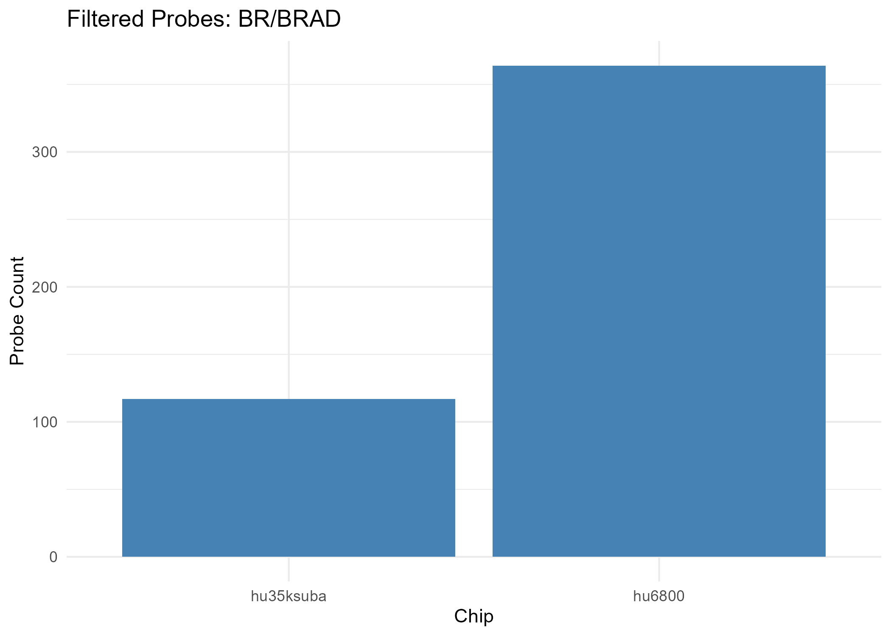
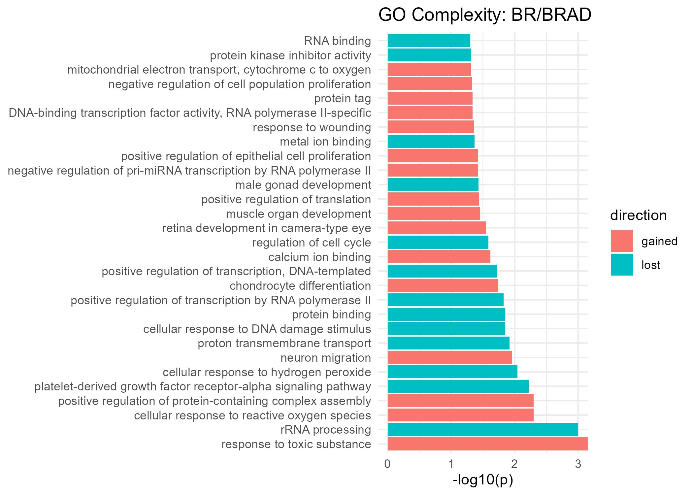
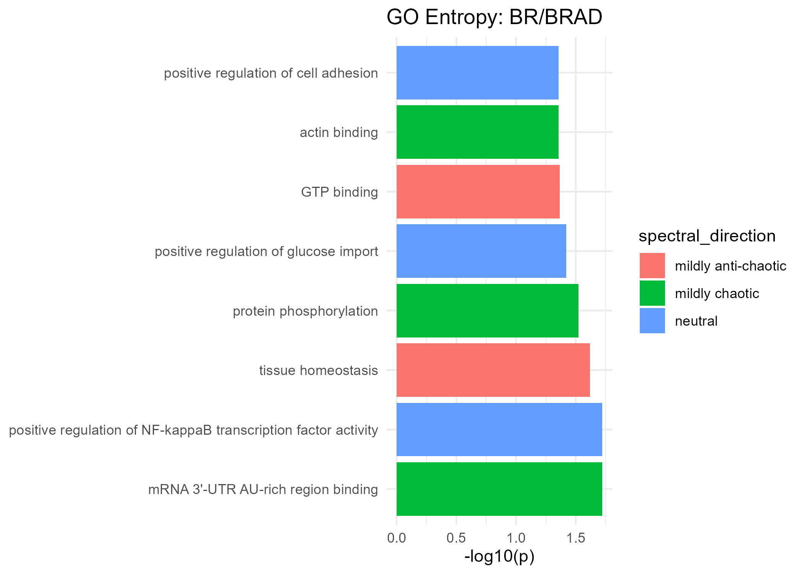

11 Comparison Report: BR/BRAD
- Cancer Category: carcinomas
- Chip hu35ksuba: 246 filtered probes
- Chip hu6800: 441 filtered probes
Overall Complexity & Entropy Assessment
| Measure | All Filtered Probes | GO MF Terms | KEGG Pathways | HALLMARK Genes |
|---|---|---|---|---|
| Complexity | strong loss (moderately supported) | () | strong loss (uncertain) | strong loss (uncertain) |
| Shannon Entropy | no clear change (uncertain) | () | no clear change (uncertain) | no clear change (uncertain) |
| Spectral Entropy | no clear change (uncertain) | () | strongly anti-chaotic (uncertain) | mildly anti-chaotic (uncertain) |
Notes - Gain = increased complexity from normal to tumor
- Loss = complexity reduction from normal to tumor
- Chaotic = increased entropy from normal to tumor
- Anti-Chaotic = entropy reduction from normal to tumor
- All p-values unadjusted unless noted
Gain Complexity Clusters
| Cluster | # Terms | p-value | Representative Terms |
|---|---|---|---|
| 98 | 1 | 0.000 | response to toxic substance |
| 117 | 1 | 0.005 | positive regulation of protein-containing complex assembly |
| 58 | 1 | 0.011 | neuron migration |
| 61 | 1 | 0.018 | chondrocyte differentiation |
| 68 | 3 | 0.030 | regulation of translation; regulation of translational initiation; positive regulation of translation |
| 84 | 1 | 0.035 | muscle organ development |
| 156 | 1 | 0.038 | positive regulation of epithelial cell proliferation |
| 63 | 1 | 0.048 | mitochondrial electron transport, cytochrome c to oxygen |
| 22 | 3 | 0.095 | negative regulation of cell population proliferation; negative regulation of cell population proliferation; regulation of cell population proliferation |
| 142 | 2 | 0.153 | positive regulation of MAPK cascade; positive regulation of ERK1 and ERK2 cascade |
| 23 | 3 | 0.177 | RNA splicing; RNA processing; RNA splicing |
| 35 | 2 | 0.205 | neuron differentiation; neuron differentiation |
| 44 | 3 | 0.247 | regulation of angiogenesis; negative regulation of angiogenesis; positive regulation of angiogenesis |
| 9 | 5 | 0.279 | regulation of transcription, DNA-templated; regulation of transcription by RNA polymerase II; regulation of transcription, DNA-templated |
| 51 | 3 | 0.369 | cell-cell adhesion; cell adhesion; cell-cell adhesion |
| 73 | 2 | 0.372 | acute-phase response; inflammatory response |
| 102 | 2 | 0.395 | cell migration; cell motility |
| 1 | 5 | 0.435 | negative regulation of transcription by RNA polymerase II; negative regulation of transcription, DNA-templated; negative regulation of transcription by RNA polymerase II |
| 21 | 3 | 0.511 | positive regulation of cell population proliferation; positive regulation of mesenchymal cell proliferation; positive regulation of cell population proliferation |
| 108 | 2 | 0.540 | extracellular matrix organization; basement membrane organization |
| 13 | 3 | 0.554 | immune response; adaptive immune response; immune response |
| 20 | 2 | 0.563 | heart development; heart development |
| 29 | 4 | 0.748 | regulation of gene expression; positive regulation of gene expression; regulation of gene expression |
| 25 | 2 | 0.864 | response to xenobiotic stimulus; response to xenobiotic stimulus |
| 30 | 2 | 0.902 | negative regulation of gene expression; negative regulation of gene expression |
| 17 | 3 | 0.911 | nervous system development; nervous system development; central nervous system development |
| 11 | 2 | 0.992 | protein phosphorylation; protein dephosphorylation |
| * Combined p-values are computed using Fisher’s method (sumlog) across the GO terms in each cluster. |
Loss Complexity Clusters
| Cluster | # Terms | p-value | Representative Terms |
|---|---|---|---|
| 66 | 1 | 0.001 | rRNA processing |
| 45 | 5 | 0.004 | positive regulation of transcription, DNA-templated; positive regulation of transcription by RNA polymerase II; positive regulation of pri-miRNA transcription by RNA polymerase II |
| 133 | 1 | 0.006 | platelet-derived growth factor receptor-alpha signaling pathway |
| 95 | 1 | 0.037 | male gonad development |
| 62 | 4 | 0.105 | cytoplasmic translation; translation; translational initiation |
| 97 | 2 | 0.126 | response to virus; response to bacterium |
| 60 | 3 | 0.195 | positive regulation of protein phosphorylation; positive regulation of peptidyl-serine phosphorylation; positive regulation of peptidyl-tyrosine phosphorylation |
| 47 | 2 | 0.224 | defense response to virus; defense response to virus |
| 2 | 3 | 0.229 | regulation of alternative mRNA splicing, via spliceosome; regulation of alternative mRNA splicing, via spliceosome; regulation of RNA splicing |
| 80 | 2 | 0.240 | transforming growth factor beta receptor signaling pathway; cellular response to transforming growth factor beta stimulus |
| 37 | 2 | 0.301 | negative regulation of cell migration; negative regulation of cell migration |
| 33 | 3 | 0.315 | protein ubiquitination; protein K48-linked ubiquitination; protein ubiquitination |
| 26 | 3 | 0.355 | response to wounding; response to wounding; wound healing |
| 46 | 2 | 0.379 | protein stabilization; protein stabilization |
| 34 | 3 | 0.426 | cell differentiation; fat cell differentiation; cell differentiation |
| 24 | 2 | 0.470 | cellular response to starvation; cellular response to glucose starvation |
| 6 | 2 | 0.646 | tissue homeostasis; maintenance of blood-brain barrier |
| 86 | 3 | 0.729 | blood coagulation; platelet activation; platelet aggregation |
| 14 | 7 | 0.752 | signal transduction; G protein-coupled receptor signaling pathway; intracellular signal transduction |
| 10 | 3 | 0.916 | mRNA processing; mRNA splicing, via spliceosome; mRNA processing |
| 19 | 3 | 0.989 | brain development; brain development; substantia nigra development |
| * Combined p-values are computed using Fisher’s method (sumlog) across the GO terms in each cluster. |
Mixed Complexity Clusters
| Cluster | # Terms | p-value | Representative Terms |
|---|---|---|---|
| 131 | 2 | 0.000 | cellular response to reactive oxygen species; cellular response to hydrogen peroxide |
| 74 | 2 | 0.024 | cellular response to DNA damage stimulus; response to endoplasmic reticulum stress |
| 52 | 2 | 0.031 | proton transmembrane transport; proton transmembrane transport |
| * Combined p-values are computed using Fisher’s method (sumlog) across the GO terms in each cluster. |
⚠️ Table not available.
Significant GO Molecular Function Terms (Complexity)

Gained Complexity
| GeneSet | p-value |
|---|---|
| DNA-binding transcription factor activity, RNA polymerase II-specific | 0.046 |
| calcium ion binding | 0.024 |
| cellular response to reactive oxygen species | 0.005 |
| chondrocyte differentiation | 0.018 |
| mitochondrial electron transport, cytochrome c to oxygen | 0.048 |
| muscle organ development | 0.035 |
| negative regulation of cell population proliferation | 0.047 |
| negative regulation of pri-miRNA transcription by RNA polymerase II | 0.038 |
| neuron migration | 0.011 |
| positive regulation of epithelial cell proliferation | 0.038 |
| positive regulation of protein-containing complex assembly | 0.005 |
| positive regulation of translation | 0.036 |
| protein tag | 0.046 |
| response to toxic substance | 0.000 |
| response to wounding | 0.044 |
| retina development in camera-type eye | 0.028 |
Lost Complexity
| GeneSet | p-value |
|---|---|
| RNA binding | 0.050 |
| cellular response to DNA damage stimulus | 0.014 |
| cellular response to hydrogen peroxide | 0.009 |
| male gonad development | 0.037 |
| metal ion binding | 0.043 |
| platelet-derived growth factor receptor-alpha signaling pathway | 0.006 |
| positive regulation of transcription by RNA polymerase II | 0.015 |
| positive regulation of transcription, DNA-templated | 0.019 |
| protein binding | 0.014 |
| protein kinase inhibitor activity | 0.048 |
| proton transmembrane transport | 0.012 |
| rRNA processing | 0.001 |
| regulation of cell cycle | 0.026 |
Significant GO Molecular Function Terms (Spectral Entropy)

Mildly Anti-Chaotic
| GeneSet | p-value |
|---|---|
| GTP binding | 0.043 |
| tissue homeostasis | 0.024 |
Neutral
| GeneSet | p-value |
|---|---|
| positive regulation of NF-kappaB transcription factor activity | 0.019 |
| positive regulation of cell adhesion | 0.044 |
| positive regulation of glucose import | 0.038 |
Mildly Chaotic
| GeneSet | p-value |
|---|---|
| actin binding | 0.044 |
| mRNA 3’-UTR AU-rich region binding | 0.019 |
| protein phosphorylation | 0.030 |
Significant KEGG Pathways (Complexity)
⚠️ Plot not available.Gained Complexity
| GeneSet | p-value | Cancer Pathway |
|---|---|---|
| Pathways in cancer | 0.704 | ✅ |
Lost Complexity
| GeneSet | p-value | Cancer Pathway |
|---|---|---|
| Prostate cancer | 0.195 | ✅ |
| Small cell lung cancer | 0.566 | ✅ |
Significant KEGG Pathways (Spectral Entropy)
⚠️ Plot not available.Mildly Anti-Chaotic
| GeneSet | p-value | Cancer Pathway |
|---|---|---|
| Pathways in cancer | 1.000 | ✅ |
Neutral
| GeneSet | p-value | Cancer Pathway |
|---|---|---|
| Prostate cancer | 1.000 | ✅ |
Mildly Chaotic
| GeneSet | p-value | Cancer Pathway |
|---|---|---|
| Small cell lung cancer | 1.000 | ✅ |
Significant HALLMARK Genes (Complexity)
Gained Complexity
| GeneSet | p-value |
|---|---|
| HALLMARK_TNFA_SIGNALING_VIA_NFKB | 0.032 |
Significant HALLMARK Genes (Spectral Entropy)
No significant MSigDB gene sets found (spectral entropy).